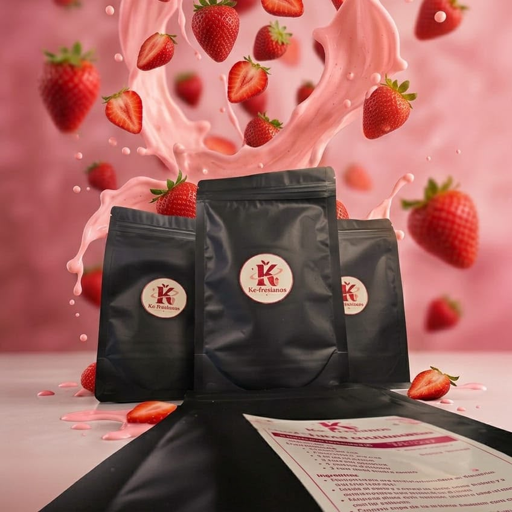
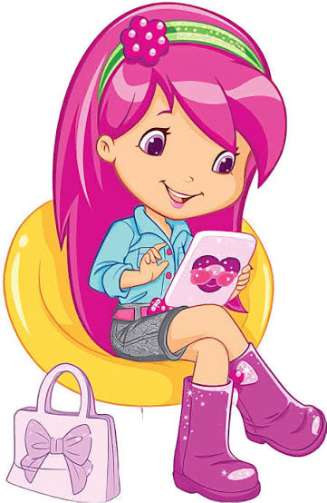
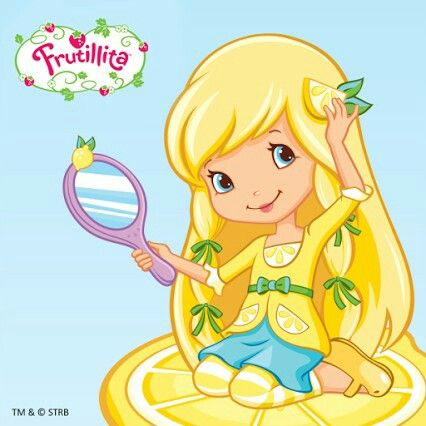
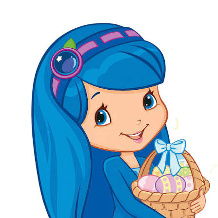
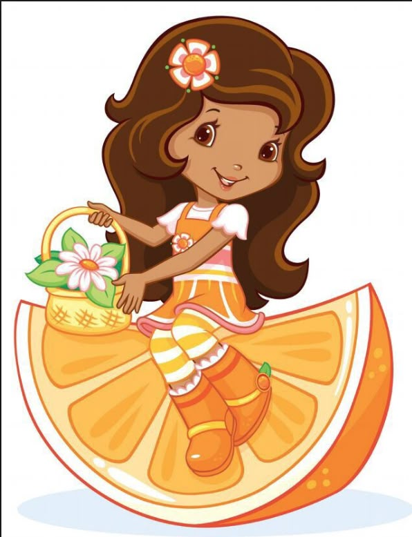

¡Los pensadores críticos toman kéfir!
¿Tú lo consumes?

KE-FRESIANOS
"Fermenta tu bienestar, nutre tu vida."

Es una mezcla en polvo instantánea elaborada mediante kéfir deshidratado, fresa deshidratada, proteína de suero de leche y monk fruit.
Transforma el kéfir tradicional líquido en un formato práctico en polvo que facilita su almacenamiento, transporte y preparación.
Brindamos una alternativa funcional para incorporar alimentos fermentados y proteína de alta calidad (7.15 g por porción) a la vida diaria.
Ventajas: Libre de azúcares añadidos, bajo en sodio y preparación rápida en segundos.
¿Quiénes somos?
Proyecto desarrollado por estudiantes de la Licenciatura en Nutrición del Instituto de Ciencias de la Salud (ICSa) de la UAEH.
Misión:
Elaborar y ofrecer una mezcla en polvo a base de kéfir y fresa que proporcione una alternativa práctica para su consumo, mediante un producto de calidad, fácil preparación y características acordes con las necesidades de los consumidores[cite: 38].
Visión:
Consolidarnos como una alternativa innovadora y accesible de alimentos funcionales en el mercado local, destacando por nuestro compromiso con la nutrición, la practicidad y la mejora continua.
Objetivo General:
Introducir y desarrollar Ke-fresianos en el mercado local mediante estrategias de investigación de mercado, optimización del producto, promoción, comercialización y distribución que permitan evaluar su aceptación y establecer bases para su crecimiento durante los primeros seis meses.
¡Conoce al equipo detrás de Ke-fresianos!

Frambuesita
Vanessa Ivonne L.

Dulce de Limón
Luz Rebecca C.

Morita
Shadani Lozano H.

Naranjita
Irvin Montoya X.
| Nutrimento | Por 100 g de polvo | Por porción preparada |
|---|---|---|
| Contenido energético | 447.27 kcal (1,871.98 kJ) | 160.70 kcal (672.59 kJ) |
| Proteínas | 63.99 g | 17.43 g |
| Grasas totales | 7.77 g | 4.24 g |
| Grasas saturadas | 3.27 g | 2.40 g |
| Grasas trans | 0 g | 0 g |
| Hidratos de carbono | 29.92 g | 13.17 g |
| Azúcares totales | 26.65 g | 12.52 g |
| Azúcares añadidos | 0 g | 0 g |
| Fibra dietética | 0.45 g | 0.09 g |
| Sodio | 355.38 mg | 146.08 mg |
| Vitamina A | 657.35 µg | 221.47 µg |
| Vitamina C | 15.50 mg | 3.10 mg |
| Vitamina B3 (niacina) | 0.225 mg | 0.045 mg |
| Vitamina D | 12.70 µg | 3.48 µg |
| Calcio | 1,397.75 mg | 305.56 mg |
| Hierro | 0.13 mg | 0.026 mg |
Lactobacillus lactis, Lactobacillus rhamnosus, Streptococcus diacetylactis, Lactobacillus plantarum, Lactobacillus casei, Saccharomyces florentinus, Leuconostoc cremoris, Bifidobacterium longum, Bifidobacterium breve, Lactobacillus acidophilus, Bifidobacterium lactis y Lactobacillus reuteri.
Presentación Ke-fresianos
$35.00 MXN c/u
Total porciones: 0
Total a pagar: $0.00 MXN